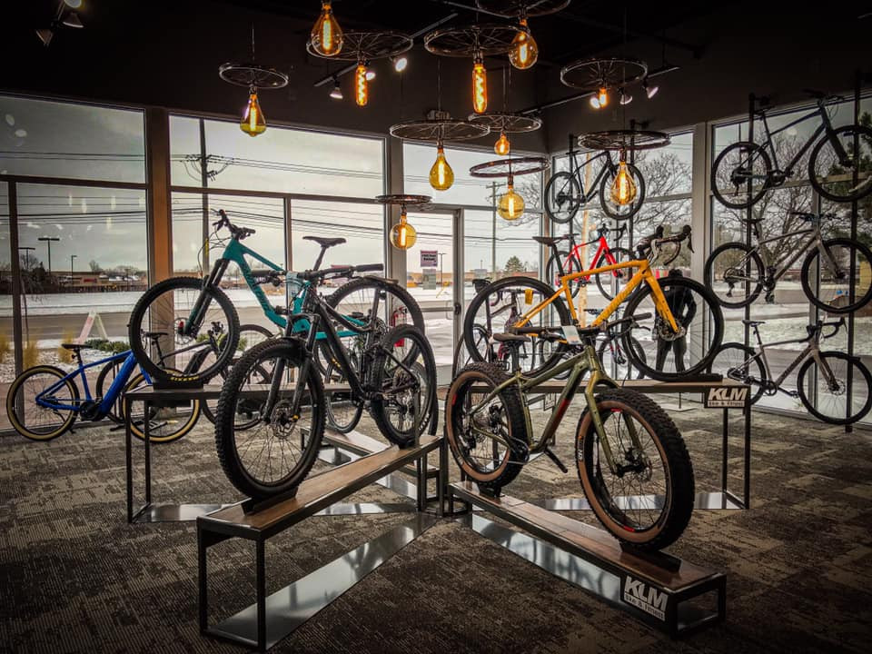

A comprehensive data exploration project examining customer profiles, preferences, and purchasing patterns. By analyzing demographics, socio-economic factors, and geographic influences, I uncovered actionable insights to optimize sales strategies. The result is an interactive coffee sales dashboard that empowers users to explore data trends and support informed decision-making — built using Excel and Tableau.

Designed and built a dynamic sales dashboard to deliver actionable insights for stakeholders. The project covers the full pipeline — data collection, cleaning, and visualization — resulting in a user-friendly Tableau dashboard that simplifies data-driven decision making for management.

A Python-based data exploration project analyzing movie revenue trends across several decades using Pandas, Seaborn, and Matplotlib. Investigated the impact of streaming platforms like Netflix on industry health and revenue patterns — demonstrating proficiency in data analysis, visualization, and quality assurance.
YouTube AI Intelligence Tool
🔧 In Progress — AI-powered tool that analyzes YouTube channel data via the YouTube API and delivers content recommendations using an AI layer. Built with Python, APIs, and data analysis techniques learned through the TKH AI Engineering Fellowship.